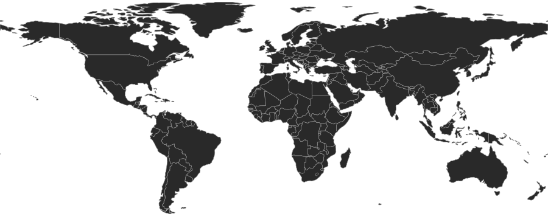

<!doctype html><html lang="en"><meta charset="utf-8"><meta name="viewport" content="width=device-width,initial-scale=1"><link rel="icon" type="image/svg+xml" href="hermes-symbol.svg"><title>HERMES — Global Financial Intelligence</title><style>
:root{color-scheme:dark;--bg:#111;--fg:#e9e7e2;--muted:#a6a6a6;--line:#505050}*{box-sizing:border-box}body{margin:0;background:var(--bg);color:var(--fg);font:15px system-ui,sans-serif}main,header,footer{max-width:1240px;margin:auto;padding:24px 32px}header{display:flex;align-items:end;justify-content:space-between;border-bottom:1px solid #888;gap:20px}h1{font:500 clamp(34px,6vw,64px) Georgia,serif;letter-spacing:.16em;margin:0}h2{font:500 17px monospace;text-transform:uppercase;letter-spacing:.08em;margin:0}small,.mono,button,select{font:12px monospace;color:var(--muted)}section{border-bottom:1px solid var(--line);padding:25px 0}.sectionhead{display:flex;justify-content:space-between;align-items:center;gap:12px;margin-bottom:20px}.map{position:relative;overflow:hidden;background:#101010;border:1px solid #444;aspect-ratio:900/365;touch-action:none}.mapstage{position:absolute;inset:0;transform-origin:center}.mapstage img{width:100%;height:100%;display:block}.pin{position:absolute;transform:translate(-50%,-50%);width:23px;height:23px;border:1px solid #111;border-radius:50%;background:var(--c);color:#111;font-weight:bold;cursor:pointer}.legend,.controls{display:flex;gap:14px;flex-wrap:wrap;align-items:center}.legend{margin-top:12px}.dot{display:inline-block;width:9px;height:9px;background:var(--c);margin-right:7px}button,select{background:#171717;border:1px solid #666;color:#eee;padding:7px;cursor:pointer;border-radius:0}button:focus-visible,summary:focus-visible,a:focus-visible{outline:2px solid white;outline-offset:3px}a{color:inherit}.live{display:grid;grid-template-columns:repeat(3,1fr);gap:14px}.screen{aspect-ratio:16/9;border:1px solid #555;display:grid;place-items:center;background:#171717;text-align:center}.channel p{margin:8px 0;font:12px monospace}details{border-top:1px solid #383838;padding:14px 0}summary{cursor:pointer;display:grid;grid-template-columns:10px 70px 1fr auto;gap:12px;align-items:center;list-style:none}summary::-webkit-details-marker{display:none}summary:after{content:'+'}details[open] summary:after{content:'−'}.headline{font:500 20px Georgia,serif}.body{padding-left:24px;max-width:840px;color:#c9c9c9}.group{font:12px monospace;color:var(--c);margin:24px 0 8px;text-transform:uppercase}table{width:100%;border-collapse:collapse;font:13px monospace}td,th{text-align:left;padding:12px 8px;border-top:1px solid #333}th{color:#aaa;font-weight:normal}footer{color:#aaa;font:12px monospace}.notice{padding:10px 0;color:#aaa;font:12px monospace}.empty{color:#aaa} @media(max-width:650px){main,header,footer{padding:16px}header{align-items:start;flex-direction:column}.live{grid-template-columns:1fr 1fr}.headline{font-size:16px}summary{grid-template-columns:9px 48px 1fr auto;gap:7px}.pin{width:18px;height:18px;font-size:10px}.sectionhead{flex-wrap:wrap}}

.brand{display:flex;align-items:center;gap:14px}.brand img{width:clamp(42px,6vw,64px);height:auto;flex:none}.pin{width:36px;height:43px;border:0;border-radius:0;background:none;padding:0;display:block;transform-origin:50% 100%;color:#111}.pin svg{display:block;width:100%;height:100%;overflow:visible}.pin:focus-visible{outline-offset:1px}.dot{width:18px;height:18px;display:inline-grid;place-items:center;color:#111;font:bold 13px/1 monospace;font-style:normal;vertical-align:middle}.legend small{display:flex;align-items:center}summary{grid-template-columns:18px 70px 1fr auto}@media(max-width:650px){.pin{width:30px;height:36px}summary{grid-template-columns:18px 48px 1fr auto}.brand{gap:8px}}
</style><header><div class="brand"><div><h1>HERMES</h1><small>GLOBAL FINANCIAL INTELLIGENCE SYSTEM</small></div></div><small id="clock"></small></header><main><div class="notice">BETA / HEADLINES NÃO VERIFICADAS · COTAÇÕES DE REFERÊNCIA NÃO EM TEMPO REAL</div><section><div class="sectionhead"><h2>01 / World map</h2><div class="controls"><button id="minus">−</button><button id="plus">+</button><button id="reset">Reset map</button></div></div><div class="map" id="map"><div class="mapstage" id="stage"><div id="pins"></div></div></div><div class="legend" id="legend"></div><p id="selection" class="mono" aria-live="polite">Select a pin to filter the news.</p></section><section><div class="sectionhead"><h2>02 / Live broadcasts</h2><small>External providers</small></div><div class="live" id="live"></div></section><section id="news"><div class="sectionhead"><h2>03 / Global news</h2><div class="controls"><select id="instrument" aria-label="Filter instrument"><option value="">All instruments</option></select><button id="clear">Clear filters</button></div></div><div id="events"></div></section><section><div class="sectionhead"><h2>04 / Markets</h2><small>Feed not connected</small></div><table><thead><tr><th>Instrument</th><th>Last</th><th>Change</th></tr></thead><tbody id="markets"></tbody></table></section></main><footer>BEYOND THE HEADLINES. AHEAD OF THE MARKETS. / v1.3 BETA</footer><script>
const symbols=['!','▲','◆','i'];const colors=['#e25151','#e99848','#dfc451','#568bc4'],cats=['Critical','Emerging','Early Signal','Informational'],watch=['XAUUSD','GBPUSD','EURUSD','EURGBP','USDJPY','NAS100','BTCUSD'];
const data=[['United States',-77,39,0,90,'Major port operations suspended','A hypothetical suspension of cargo operations.','Potential shipping delays and higher logistics costs.',['XAUUSD','NAS100','EURUSD']],['United States',-118,34,2,46,'Manufacturing orders decline','A simulated decline in new orders.','Possible weaker growth expectations.',['NAS100','EURUSD']],['United Kingdom',-0.1,51.5,1,73,'Central bank signals policy review','A hypothetical review of monetary policy.','Potential repricing of sterling.',['GBPUSD','EURGBP']],['Japan',139.7,35.7,1,68,'Industrial supply disruption reported','A simulated disruption to industrial output.','Potential effects on supply chains and yen.',['USDJPY','NAS100']],['Brazil',-46.6,-23.5,2,42,'Agricultural shipment delays','A simulated delay in exports.','Possible changes to commodity costs.',['EURUSD']],['Australia',151,-33.9,3,22,'Trade statistics published','Hypothetical publication of trade statistics.','Limited immediate market relevance.',['XAUUSD']],['Singapore',103.8,1.3,2,49,'Digital asset settlement trial announced','A hypothetical industry trial.','Possible longer-term adoption signal.',['BTCUSD']]];
let country='',selected=-1,zoom=1,dx=0,dy=0;const $=s=>document.querySelector(s);const time=()=>$('#clock').textContent=new Date().toISOString().slice(11,19)+' UTC';time();setInterval(time,1000);$('#legend').innerHTML=cats.map((c,i)=>`<small><i class="dot" style="--c:${colors[i]}" aria-hidden="true">${symbols[i]}</i>${c}</small>`).join('');$('#instrument').innerHTML+=watch.map(w=>`<option>${w}</option>`).join('');$('#markets').innerHTML=watch.map(w=>`<tr><td>${w}</td><td>—</td><td>—</td></tr>`).join('');
function render(){const groups=new Map();data.forEach((e,i)=>{const k=zoom>=2?String(i):e[0];if(!groups.has(k))groups.set(k,[]);groups.get(k).push([e,i])});$('#pins').replaceChildren();groups.forEach(items=>{const [e,i]=items[0],p=document.createElement('button');p.className='pin';const severity=Math.min(...items.map(x=>x[0][3]));p.style.cssText=`left:${(e[1]+180)/360*100}%;top:${(85-e[2])/146*100}%;--c:${colors[Math.min(...items.map(x=>x[0][3]))]};transform:translate(-50%,-100%) scale(${1/zoom})`;p.innerHTML=`<svg viewBox="0 0 36 43" aria-hidden="true"><path d="M18 42 5 28A17 17 0 1 1 31 28Z" fill="${colors[severity]}" stroke="#111" stroke-width="1.5"/><text x="18" y="12" text-anchor="middle" dominant-baseline="central" font-family="system-ui,sans-serif" font-size="10" font-weight="800" fill="#111">${symbols[severity]}</text><text x="18" y="23" text-anchor="middle" dominant-baseline="central" font-family="monospace" font-size="${items.length>99?10:13}" font-weight="800" fill="#111">${items.length}</text></svg>`;p.title=e[0]+' / '+items.length+' event(s) / '+cats[severity];p.setAttribute('aria-label',p.title);p.onclick=()=>{country=e[0];selected=zoom>=2?i:-1;$('#selection').textContent=country+' / selected';news()};$('#pins').append(p)});news()}
function news(){let out='';cats.forEach((c,j)=>{const rows=data.map((e,i)=>[e,i]).filter(([e,i])=>e[3]===j&&(!country||e[0]===country)&&(selected<0||selected===i)&&(!$('#instrument').value||e[8].includes($('#instrument').value)));if(!rows.length)return;out+=`<div class="group" style="--c:${colors[j]}">${c} / ${rows.length}</div>`+rows.map(([e])=>`<details ${j<2?'open':''}><summary><i class="dot" style="--c:${colors[j]}" aria-hidden="true">${symbols[j]}</i><span class="mono">${e[4]}/100</span><span class="headline">${e[5]}</span></summary><div class="body"><p class="mono">${e[0]} · SIMULATED</p><p>${e[6]}</p><p><b>Potential impact:</b> ${e[7]}</p><p class="mono">${e[8].join(' · ')}</p><small>Sources: none — fictional example</small></div></details>`).join('')});$('#events').innerHTML=out||'<p class="empty">No matching events.</p>'}
// Event schema: country, lon, lat, severity, score, headline, facts, impact, instruments.
$('#instrument').onchange=news;$('#clear').onclick=()=>{country='';selected=-1;$('#instrument').value='';$('#selection').textContent='Select a pin to filter the news.';news()};function transform(){ $('#stage').style.transform=`translate(${dx}px,${dy}px) scale(${zoom})`;render()}$('#plus').onclick=()=>{zoom=Math.min(4,zoom*1.5);transform()};$('#minus').onclick=()=>{zoom=Math.max(1,zoom/1.5);if(zoom===1)dx=dy=0;transform()};$('#reset').onclick=()=>{zoom=1;dx=dy=0;transform()};let drag=null;$('#map').onpointerdown=e=>{if(e.target.closest('button')||zoom===1)return;drag=[e.clientX-dx,e.clientY-dy];$('#map').setPointerCapture(e.pointerId)};$('#map').onpointermove=e=>{if(drag){dx=e.clientX-drag[0];dy=e.clientY-drag[1];$('#stage').style.transform=`translate(${dx}px,${dy}px) scale(${zoom})`}};$('#map').onpointerup=$('#map').onpointercancel=()=>drag=null;
const channels=[['France 24','https://www.france24.com/en/live'],['Al Jazeera English','https://www.aljazeera.com/live'],['DW News','https://www.dw.com/en/live-tv/s-100825']];$('#live').innerHTML=channels.map(([n,u])=>`<div class="channel"><div class="screen"><a href="${u}" target="_blank" rel="noopener noreferrer">Open official broadcast ↗</a></div><p>${n}</p></div>`).join('');render();
</script><script src="live-data.js" defer></script><script src="markets.js" defer></script></html>
